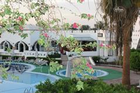
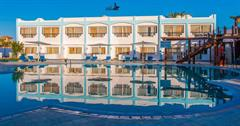
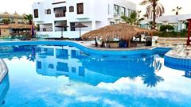
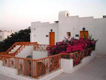
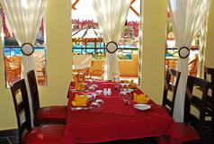

Головна
Тури
Послуги
Про нас
Контакти

Uni Sharm Aqua Hotel
Uni Sharm Aqua Hotel – невеликий готель в районі Hadaba. Готель має дуже зручне розташування. Біля готелю знаходяться торгові ряди Il Merkato і торгово-розважальний комплекс Alf Leila Wa Leila, які порадують любителів шопінгу і місцевого колориту.
Ціна: $1000

Regency Lodge Hotel
Апарт-готель Regency Lodge в місті Шарм-еш-Шейх. Тут є відкритий басейн, сад і тераса, а також бар та приватний пляж. З вікон відкривається чудовий краєвид на басейн. У Regency Lodge є Wi-Fi і безкоштовна приватна автостоянка.
Ціна: $1000

Badawia Resort
Badawia Resort є готель у місті Шарм-еш-Шейх, за 1,6 км від такого: Пляж Ріф-Біч. Серед зручностей — сад, ресторан, бар та безкоштовне приватне паркування.
Ціна: $1000

Grand Halomy Resort
Готель Grand Halomy Resort має унікальне розташування на височині з чудовим панорамним видом на затоку Naama Bay і остров Tiran. Власний каскадний пляж з гарним кораловим рифом, близькість до променаду Naama Bay та до торгово-розважального комплексу. Genena City - все це робить готель популярним місцем відпочинку.
Ціна: $1000

Sharm Bride Resort
Невеликий затишний готель у районі Nabq Bay із красивою зеленою територією, водними гірками, сучасними номерами.
Ціна: $1000
El Khan Sharm Hotel
Готель El Khan Sharm це чарівний бутік-готель зі своїм неповторним шармом та стилем, грандіозний та багато прикрашений, зі східними мотивами, з розкішними номерами та чудовим набором зручностей. Він розташований у тихому районі скелі Ум-Ель-Сід, всього за кілька хвилин ходьби від жвавого центру міста з його численними барами, кафе, ресторанами, казино, дискотеками та магазинами.
Ціна: $1000